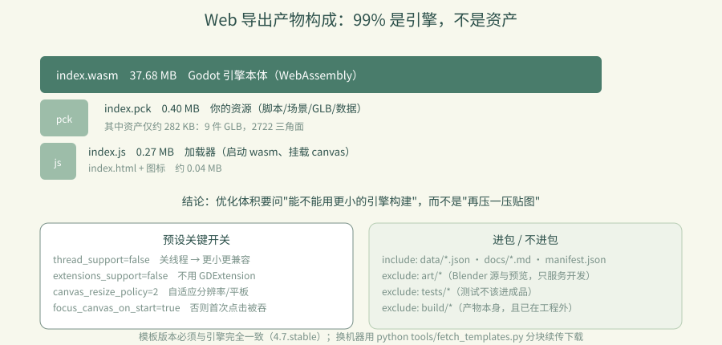
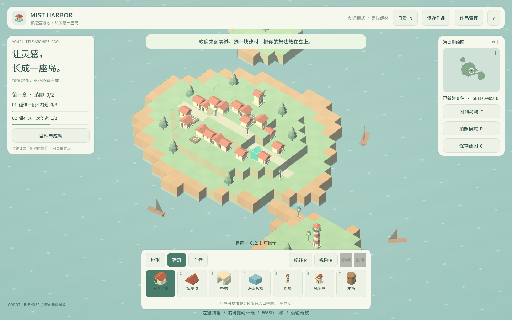
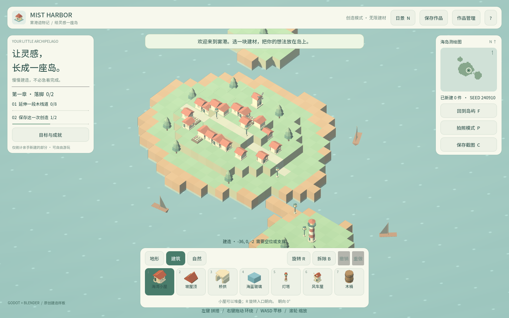

卷 5 · 第 25 章 Web 导出：预设、模板与 37.7 MB 是怎么来的
本章目标：读懂
export_presets.cfg的 Web 预设，知道产物里
谁占了多少、以及"关线程 / 关扩展"这些开关为什么必须这么设。
对应任务：T25 / T26 | 对应文件：project/export_presets.cfg、tools/dev.py
25.1 一条命令与四个产物
python tools/dev.py export-web # → build/| 文件 | 大小 | 是什么 |
|---|---|---|
| --- | ---: | --- |
index.wasm | 37.68 MB | Godot 引擎本体（WebAssembly 编译产物） |
index.pck | 0.40 MB | 你的游戏资源包（脚本/场景/GLB/数据） |
index.js | 0.27 MB | 加载器（启动 wasm、挂载 canvas） |
index.html + 图标 | ~0.04 MB | 页面外壳 |
结论先说：包体里 99% 是引擎，不是你的资产。
所以"优化体积"的第一性问题永远是：能不能用更小的引擎构建，而不是"再压一压贴图"。
25.2 预设里的关键开关
[preset.0.options]
variant/extensions_support=false # 关 GDExtension
variant/thread_support=false # 关线程
vram_texture_compression/for_desktop=true
html/canvas_resize_policy=2 # 自适应
html/focus_canvas_on_start=true # 启动即获得焦点（否则要点一下才能操作）
html/head_include="<meta name=\"theme-color\" content=\"#d9ece6\" />"
progressive_web_app/enabled=false| 开关 | 为什么 |
|---|---|
| --- | --- |
thread_support=false | 关线程 → 体积更小、兼容性更好；本游戏是单线程模型，不需要 |
extensions_support=false | 不用 GDExtension → 省体积 |
canvas_resize_policy=2 | canvas 跟随窗口，适配不同分辨率与平板 |
focus_canvas_on_start | 否则玩家打开页面后第一次点击会被浏览器吞掉 |
head_include 的 theme-color | 移动端浏览器地址栏配色与游戏一致 |
📌
focus_canvas_on_start是很典型的一类"不影响功能但毁体验"的开关——
少了它，新手会以为游戏卡住了。
25.3 过滤：什么进包，什么不进
include_filter="data/*.json,docs/*.md,assets/models/manifest.json"
exclude_filter="art/*,tests/*,build/*"| 目录 | 是否进包 | 原因 |
|---|---|---|
| --- | --- | --- |
assets/models/*.glb | ✅ | 运行时资源（默认 all_resources 已含） |
assets/models/manifest.json | ✅ 显式 include | 运行时要读 bounds（第 16 章） |
data/*.json | ✅ 显式 include | palette / objectives / achievements |
art/* | ❌ exclude | Blender 源、预览、溯源——只服务开发 |
tests/* | ❌ exclude | 测试脚本不该进成品 |
build/* | ❌ exclude | 导出产物本身（且它已在工程外） |
📌 第 04 章"导出目录必须在工程外"的意义在这里闭合：
如果不排除，导出会把上一版的产物再打进新包里，包体越导越大。
25.4 模板：版本必须对齐
%APPDATA%\Godot\export_templates\4.7.stable\- 模板版本必须与引擎版本完全一致（
4.7.stable↔ Godot 4.7.stable） - 缺失时导出会直接失败
- 换机器用
python tools/fetch_templates.py分块续传下载（约 1.28 GB）
25.5 体积优化的方向（按性价比排序）
| 方向 | 收益 | 成本 |
|---|---|---|
| --- | --- | --- |
| 自定义构建（去掉不用模块） | 最大（可降到十几 MB） | 需自行编译引擎模板 |
| 纹理压缩 / 资产分包 | 中 | 低 |
| 加载进度条 + 首屏 | 体验提升明显 | 低 |
| 删无用资源 | 小（我们的资产才 282 KB） | 极低 |
📌 现状判断：我们的资产只有约 0.4 MB，优化资产是徒劳的。
真正的大头是引擎，所以要么接受 37 MB，要么走自定义构建（卷 5 第 28 章）。

🌩 在云端 agent（web-cb）里是什么样
| 🖥 本地路线 | 🌩 云端 agent（web-cb） | |
|---|---|---|
| --- | --- | --- |
| 导出命令 | dev.py export-web | 同（平台执行同一命令） |
| 模板 | 本地 %APPDATA% | 云端镜像需同版本模板（4.7.stable） |
| 预览 | 本地 http.server | 云端预览（WebGL 2，等于学员真实环境） |
| 验收 | 本地 Chromium | 云端跑 browser_smoke.py 的 23 项 |
| 体积关注 | 本地看 | 云端更要关注：学员是在浏览器里下载 37 MB |
🌩 云端最容易忽略的一点：首屏等待。37 MB 在云端内网很快，
但学员的网络可能很慢——加载进度条不是锦上添花，是必需。
25.6 常见坑速查（本章）
| 现象 | 原因 | 处理 |
|---|---|---|
| --- | --- | --- |
| 导出报缺模板 | 模板版本不匹配 | 装同版本模板 |
| 打开页面点了没反应 | 没开 focus_canvas_on_start | 打开它 |
| 包体越导越大 | 产物在工程内没排除 | exclude_filter + 产物放工程外 |
| 运行时缺 manifest | 没 include 它 | 加进 include_filter |
| 手机上地址栏配色突兀 | 没设 theme-color | head_include |
| 移动端模糊 | canvas resize 策略不对 | canvas_resize_policy=2 |
25.7 本章作业
- 列出四个产物及大小，指出体积大头是什么，并说明优化优先级
- 解释
thread_support=false与focus_canvas_on_start各自解决了什么问题 - 说明
exclude_filter里三项各自的理由，并解释"产物放工程外"与它的关系 - 跑一次
dev.py export-web，记录产物大小，与本章数字对比（引擎版本不同会有差异）
🎓 教学提示（给教师 / 直播主）
- 概念锚点：先测量，再优化。37 MB 里 99% 是引擎，别去压 0.4 MB 的资产。
- 课堂演示：现场导出并列出产物大小，让学员猜比例（通常会猜错）。
- 高频误解：学生以为"贴图太多导致包大"。用数据打破直觉。
- 讨论题：37 MB 你能接受吗？什么情况下必须做自定义构建？
- 批改要点：作业 1 必须指出"大头是引擎 wasm"。
🖼 本章图集


📹 录屏分镜（9 分钟）
| 时间 | 画面 | 解说词要点 |
|---|---|---|
| --- | --- | --- |
| 00:00–01:40 | 导出命令 + 产物大小列表 | "99% 是引擎。" |
| 01:40–03:30 | 预设关键开关逐条 | "关线程省体积，focus 决定手感。" |
| 03:30–05:00 | include/exclude 过滤 | "开发资产不进包。" |
| 05:00–06:30 | 模板版本对齐 + fetch_templates | |
| 06:30–09:00 | 优化方向排序 + 作业 |
🎬 视频位（待录制）
把录好的视频放到course/media/video/25/（mp4 / webm / mov），重新执行 python tools/course_build.py 即会自动内嵌；首帧默认用本章第一张截图作为封面。分镜脚本见上一节。🖼 配图清单
| 文件名 | 内容 | 生成方式 |
|---|---|---|
| --- | --- | --- |
25-web-running.png | 浏览器中运行的 Web 导出 | python tools/course_capture.py --chapter 25 |
25-desktop-full.png | 桌面视口完整画面 | 同上 |
🎥 直播脚本（L3 片段，10 分钟）
- 开场："猜猜这个游戏的资产占包体多少？"——答案 1%
- 演示：导出 + 列大小 + 打开页面
- 互动：让观众报自己项目的包体构成
- 收尾：预告 Windows 单文件
❓ 本章 FAQ
Q：37 MB 一定要下载完才能玩吗？
A：是（当前未做流式加载）。所以加载进度条与首屏提示很重要。
Q：能不能把 pck 单独托管、按需加载？
A：可以（Godot 支持外部 pck 加载），是"资产分包"方向，属于体积优化专项（第 28 章）。
Q：为什么 index.pck 只有 0.4 MB？
A：因为资产是低模 + 纯色材质（约 282 KB GLB），没有贴图和音频——第 17/18 章的风格决策在这里变现。